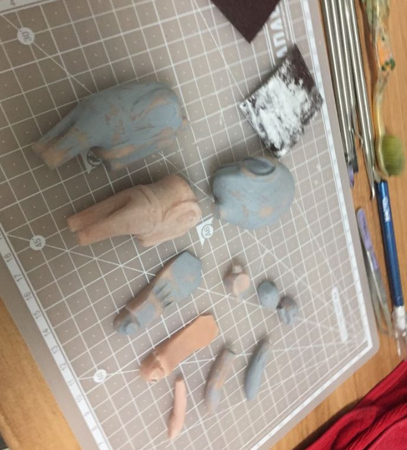
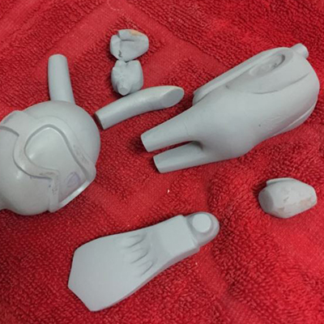

만들고싶은 캐릭터를 디자인한다.
스케치한 캐릭터를 조형을 위하여 앞,뒤,옆의 3면도를 만든다.
3D프린터가있으면 컴퓨터로 3D작업을 하면 더 빠르게 실리콘틀 제작단계로 넘어갈 수 있다.
3D프린터가 없다면 및에 뼈대단계부터 시작하면 된다.
철사를 이용하여 뼈대를 잡아준다.
스컬피를 이용하여 뼈대에 살을 붙어주며 헤라를 이용하여 캐릭터에 맞게 모양을 잡아준다.
어느정도 조형이 끝났으면 1차로 구워서 단단하게 만들어준다.
오븐은 120도로 10분간 구워야된다.
토이의 사지를 절단하여 파츠를 만들어준다.
사포질
사포는 150-400-600-1200 점차 고운 사포로 울퉁불퉁한 곳을 잡아주고
서페이서를 뿌려 표면을 매끄럽게 만들어준다.
완성
그림과 같이 파츠들의 반을 유토로 고정기켜준다.
레고같은 것들로 틀의 가벽을 만들어준다.
실리콘과 경화제를 10분의 1로 석어준다.